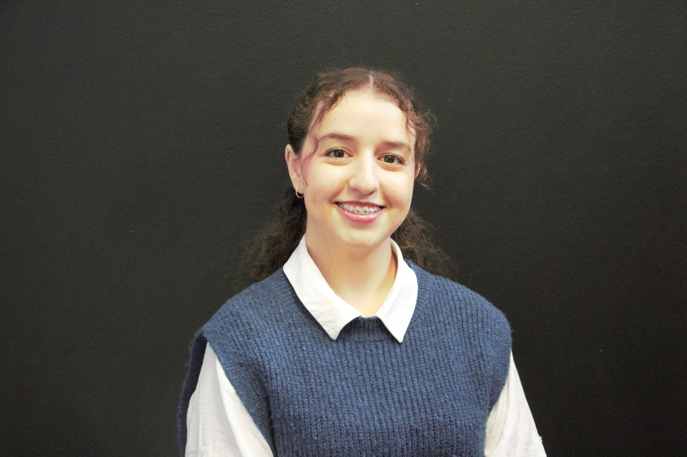

carte de visite digitale

NANassima Adli
Développeuse Web Fullstack
Scannez pour ouvrir mon portfolio
Ou scannez pour le télécharger sur votre téléphone
carte de visite digitale

NADéveloppeuse Web Fullstack
Scannez pour ouvrir mon portfolio
Ou scannez pour le télécharger sur votre téléphone